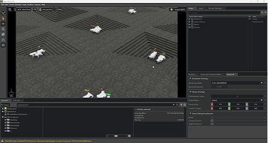

2026

Robust RL Locomotion for Unitree Go2: Terrain Adaptation & Stair Climbing
Extended prior locomotion work by developing a robust reinforcement learning controller capable of handling complex terrains, including stair climbing, using NVIDIA Isaac Lab. Implemented domain randomization, terrain-aware observations, and refined reward structures to improve stability.
▶
Watch Results on YouTube
Diffusion policy training for manipulation tasks
Built an end-to-end manipulation imitation-learning pipeline using UMI-style data collection with an Intel RealSense D405 through to diffusion policy training and deployment. Captured ~50 episodes and stood the full data → policy → robot pipeline up; the policy has not converged on the task yet, with additional demonstration data being the most likely next step.
▶
Watch Results on YouTube
6DoF Object Pose Estimation with FoundationPose (NVIDIA)
Integrated NVIDIA's FoundationPose into a manipulation control loop. Model-based 6DoF pose tracking of CAD objects from an Intel RealSense D405 feeds a PD velocity controller on a Ufactory arm, closing the loop between perception and end-effector motion in real time.
Synthetic vs Real vs Hybrid Datasets for CAD Object Detection (SyncMfg)
Designed a synthetic-data perception pipeline for CAD-based industrial object detection and ran a systematic comparison of dataset composition. Generated fully synthetic training images in Blender (varied backgrounds and materials) and benchmarked against a 100% real dataset and hybrid mixes at 2%, 5%, 10%, 15%, 25%, and 50% real ratios. Finding: a 5% hybrid mix achieves the best detection performance, minimizing annotation cost while preserving real-world robustness.
Visual Servoing with Ufactory Arm and AprilTag Tracking
Built a closed-loop, image-based visual servoing controller on a Ufactory arm with an eye-in-hand Intel RealSense D405. AprilTag detections supply the visual feature error and a velocity controller continuously drives the end-effector to null the pose error against the target frame, achieving camera-guided manipulation with no predefined trajectory.
2025

RL-Based Locomotion for Unitree Go2 (Isaac Lab)
Designed and implemented a custom reinforcement learning locomotion task for the Unitree Go2 from scratch using NVIDIA Isaac Lab. Built the full RL pipeline including task registration, observation/action spaces, reward design, and trained a stable walking policy using the RSL-RL framework with Direct Workflow environments for rapid iteration.
▶
Watch Results on YouTube

Sim-to-Sim RL Policy Transfer (Isaac Lab → Isaac Sim)
Deployed a locomotion policy trained in Isaac Lab into Isaac Sim to study policy execution, observation sequencing, and action-to-joint mapping. Reconstructed the environment, mapped the policy interface, and validated runtime behavior with interactive keyboard control as a precursor to sim-to-real deployment.

Linear Slip Mitigation in Robotic Manipulation
Co-authored a peer-reviewed Nature Communications study on linear slip during robotic grasping, a contact-control problem at the heart of dexterous manipulation. Contributed to algorithmic development and experimental validation of slip-aware control strategies under real-world contact uncertainty.

Rotational Slip Detection and Mitigation for Robot Arms
Extended slip-aware manipulation to the rotational case. Contributed to detection and control strategies that identify unintended object rotation during grasping and react to maintain stable in-hand pose. Validated experimentally on robotic arms.

3D Citrus Fruit Detection and Size Estimation
Built a multi-stage perception pipeline for agricultural robotics: a custom-trained YOLO detector feeds Segment Anything (SAM) masks, which are fused with stereo point clouds to localize, count, and size citrus fruits in 3D, combined with ripeness analysis and GPS-tagged mapping for grove-scale inventory.

RL-Based Manipulator Control Without Analytical IK
Replaced an analytical inverse-kinematics solver with a learned policy for end-effector reaching on a Trossen manipulator. Trained in PyBullet, progressing from PPO to SAC with domain randomization on dynamics and external disturbances, then deployed sim-to-real on the physical arm.

Startup Judge: Startup Texas Pitch & SBIR/STTR Demo Day
Served as a startup judge for the Startup Texas Emerging Industries Pitch Competition and SBIR/STTR Demo Day in Brownsville, Texas. Evaluated early-stage deep-tech startups and participated in the allocation of approximately $100K in funding across multiple industry sectors as part of community outreach and innovation support.

ROS 2 Navigation Stack Deployment in Isaac Sim
Integrated NVIDIA Isaac Sim with ROS 2 via the ROS 2 Bridge to deploy and test the ROS 2 navigation stack. Validated SLAM and autonomous navigation using slam_toolbox and Nav2, enabling map generation, localization, and goal-based navigation in a simulated robotics environment.
2024

Deep Q-Learning for Classic Control (Inverted Pendulum)
Implemented DQN from scratch to solve the inverted pendulum task in OpenAI Gymnasium, including value network design and discrete action selection. Additional handwritten algorithms include A2C and tabular Q-learning to demonstrate foundational RL understanding.

Continuous Control with DDPG for Bipedal Locomotion
Developed a continuous control RL solution using DDPG to train a bipedal walker environment, implementing actor-critic networks and stabilizing the learning process in simulation. Focused on observation-action mapping and reward shaping for locomotion efficiency.

Autonomous Driving Control on F1TENTH Using PID & Gap Follow
Implemented a PID-based steering controller and lidar-based gap follow algorithm for obstacle avoidance, achieving robust trajectory tracking on the F1TENTH autonomous racing platform.

Dynamic Obstacle Avoidance Using RRT on F1TENTH
Integrated pure pursuit path tracking with RRT-based dynamic obstacle avoidance to navigate the F1TENTH platform safely. Demonstrated real-time replanning and robust trajectory adherence in complex race scenarios.
▶ Watch Results on YouTube
Startup Competition Participant: Panasci (UB)
Participated in the Panasci Startup Competition at the University at Buffalo, clearing two evaluation rounds. Presented technology ideas to a panel of judges, demonstrating early-stage innovation and entrepreneurial engagement.
2023 & Earlier

System Identification on FANUC Industrial Robot (IIT Kanpur)
Research internship at IIT Kanpur on kinematic and dynamic characterization of a FANUC industrial manipulator. Designed vibration-based excitation experiments, collected displacement-time data on the arm, and applied FFT-based modal analysis to extract dominant system dynamics and resonance modes, foundational data for accurate manipulator control.

Manufacturing Quality Improvement Award: Hero MotoCorp
Received an award at Hero MotoCorp two-wheeler manufacturing facility for contributing to manufacturing quality improvement initiatives. Supported the introduction of automated inspection tools and process enhancements to improve defect detection and production consistency.

Water Rescue Drone for Drowning Rescue Assistance
Worked on the development and field testing of a water rescue drone designed to assist in drowning rescue scenarios. Developed an embedded system to capture and transmit impact force data during water interactions, enabling performance evaluation under real operating conditions.

Modular Robotic Arm for Mars Rover (5-DOF)
Designed, built, and controlled a 5-DOF modular robotic arm (3 kg payload) for a Mars rover prototype. Implemented inverse-kinematics-based joint control closed around absolute joint-position feedback from multi-turn potentiometers, an early hands-on grounding in manipulator kinematics and closed-loop control.

Go-Kart Design and Build Project
Designed and built a go-kart prototype with full compliance to competition regulations with a team of 20 engineering students. Optimized the steering geometry to achieve a minimum turning radius of 1.89 m and validated performance through real-world testing and competition evaluation.
▶
Watch Go-Kart in Action